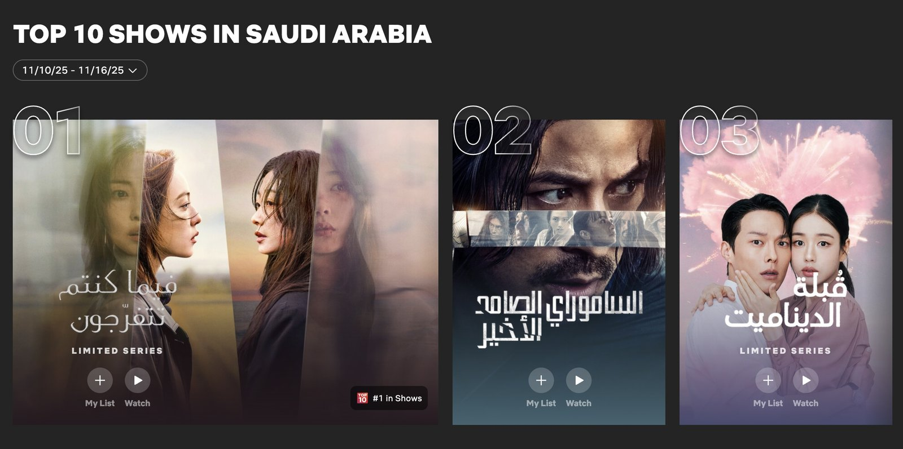
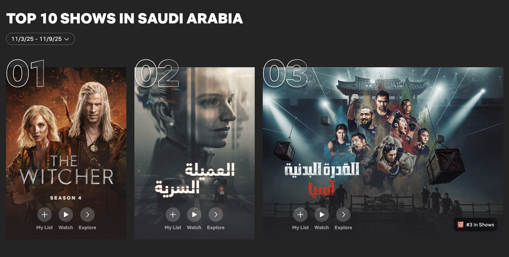
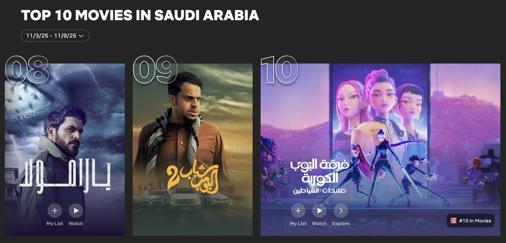

한국 드라마, 스릴러부터 로코까지 최상위권 장악
올해 11월 7일 넷플릭스에서 공개된 한국 드라마 <당신이 죽였다>(연출 이정림, 극본 김효정)는 사우디 넷플릭스 11월 2주 차 쇼 부문 1위를 차지하며 최상위권을 기록했다. 이 작품은 단짝 친구인 두 여성이 가정 폭력을 일삼는 남편을 살해하고 완벽한 범죄를 꿈꾸는 과정을 그린 미스터리 스릴러다. 현지에서 만난 일부 여성 시청자들 사이에서는 여성 중심 서사와 범죄 요소의 결합이 흥미롭다는 의견이 전해졌으며, 두 인물 간의 심리전과 긴장감 있는 전개가 작품의 강점으로 언급됐다. 특히 출연 배우들의 인지도가 사우디에서 높지 않은 상황에서도 1위를 기록했다는 점은, 현지 시청자층이 배우 유명세보다 서사적 완성도와 장르적 매력을 중심으로 작품을 선택하고 있음을 보여준다.
같은 주차 3위에는 11월 12일 공개된 로맨틱 코미디 <키스는 괜히 해서!>가 올라 역시 최상위권에 진입했다. 현지 젊은 시청자들 사이에서는 가볍고 부담 없이 즐길 수 있는 작품이라는 반응이 다수 확인됐다. 올해 6월 20일, MENA 지역 최대 OTT인 샤히드(Shahid)가 씨제이 이앤엠(CJ ENM)과의 협업 초기 라인업을 로맨틱 코미디 중심으로 구성한 것은 해당 장르에 대한 지역적 선호도가 높다는 점을 보여준다.

▲ 11월 2주차 1위 '당신이 죽였다', 3위 '키스는 괜히 해서!' — 출처: 넷플릭스
예능까지 전 장르에서 고른 주목
올해 10월 28일 공개된 한국 서바이벌 예능 <피지컬 아시아>(연출 장호기)는 11월 1주 차 쇼 부문 3위로 최상위권에 안착했다. 일부 남성 시청자들로부터는 경쟁, 체력, 국가 간 대결이라는 포맷이 흥미롭다는 의견이 전해졌으며, 중동 지역 참가자가 있었다면 더 높은 몰입도를 기대할 수 있었을 것이라는 아쉬움도 나왔다.

▲ 11월 1주차 3위에 오른 서바이벌 예능 '피지컬: 아시아' — 출처: 넷플릭스
한국 예능 외 다른 장르도 고르게 선전했다. 한국 드라마 <오징어 게임>을 모티브로 제작된 넷플릭스 오리지널 리얼리티쇼 <오징어 게임: 더 챌린지 시즌 2>는 11월 4일 공개 이후 2주 차에 7위를 기록하며 상위권에 진입했다. 애니메이션 영화 <케이팝 데몬 헌터스>(감독·각본 매기 강, 크리스 아펠 한스 외) 또한 11월 1주 차와 3주 차에 10위권을 유지하며 상위권에서 꾸준한 존재감을 보였다.

▲ 11월 영화 부문 상위권을 유지한 '케이팝 데몬 헌터스' — 출처: 넷플릭스
11월 시청 순위와 현지에서 관찰된 반응은 한국 콘텐츠가 특정 장르에 편중되지 않고 스릴러, 로맨스, 예능, 애니메이션까지 폭넓게 소비되고 있음을 보여준다. 이는 한국 콘텐츠가 사우디 시청자들 사이에서 다양한 장르에서 고르게 상위권을 차지하며 안정적인 선택지로 자리 잡았음을 시사한다.
사진 출처 및 참고자료
넷플릭스, https://www.netflix.com/tudum/top10/saudi-arabia
《Variety》 (2025. 06. 18). CJ ENM Inks Major Content Deal With Shahid to Bring K-Dramas to Middle East and North Africa, variety.com